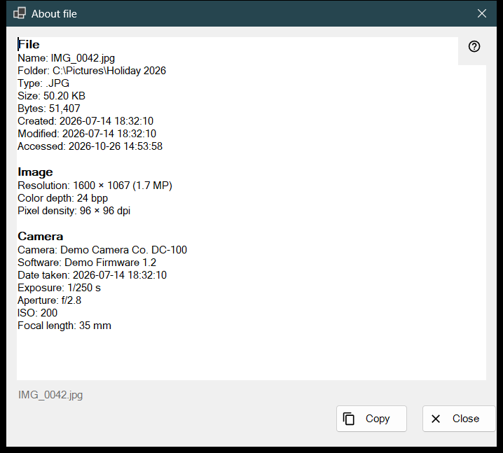
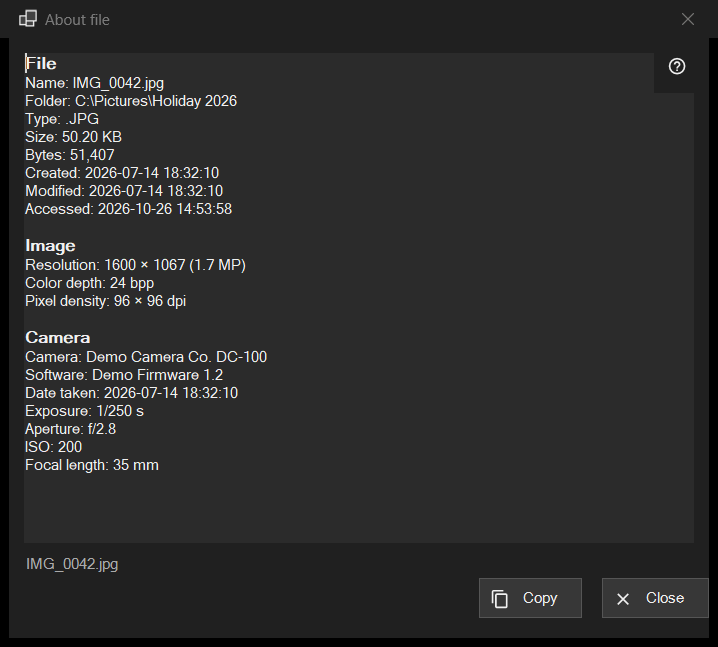

About file
What this is for
A read-only snapshot of what the program knows about the file on screen: the file itself, an image with its camera data, a document, and the audio and video tracks. It opens from the i item of the first panel, or from About file in the file block of the viewer menus, and describes the file as it was at the moment of the click.


In this order
- Show a file in the viewer.
- Click the i item of the first panel, or choose About file in the menu.
- Wait a moment: the status line says Reading file metadata.. and the rows fill in.
- Read the blocks, select what you need, and press Copy to put the whole text on the clipboard.
- Press Close or Esc.
The elements
File
Every file has this block: Name, Folder, Type, Size, Bytes, Created, Modified, Accessed and Attributes. A row with nothing to show is left out. If no file is open the status line says No file is selected; a temporary copy from an archive, a remote address or a file that has disappeared gives The file is not available, and no window opens.
Image
For a picture: Resolution as displayed (a phone photo stored sideways reads in its upright size), Color depth and Pixel density, when the file records them.
Camera
Read from the EXIF data of the photo: Camera, Software, Date taken, Exposure, Aperture, ISO, Focal length and Author. Coordinates appear only when the photo carries GPS data, and Copy includes them, so check the text before you share it.
Document
For a text file: Lines, Words, Characters and Encoding, plus Only part of the file was read when it is too large to read in full. For an e-book: Name and Author. For a PDF: Pages.
Media, Video and Audio
For audio and video files the tags (Name, Artist, Album, Year, Track, Genre, Director, Series, Season, Episode, Duration) and the first track of each kind (Video: Resolution, Frames per second, Codec, Bitrate; Audio: Codec, Channels, Sample rate, Bitrate) are added a moment after the rest, when the media engine finishes reading. The window never waits for it. Network streams get no track rows.
Copy and Close
Copy puts the whole text on the clipboard and the status line says Copied to the clipboard; if another program is holding the clipboard it says so and you can press Copy again. A selection copied with Ctrl+C works too. If nothing could be read, the box says The file's details could not be read. Next to the buttons the status line shows the file name. Flipping to another file does not change this window: click i again for the new file.